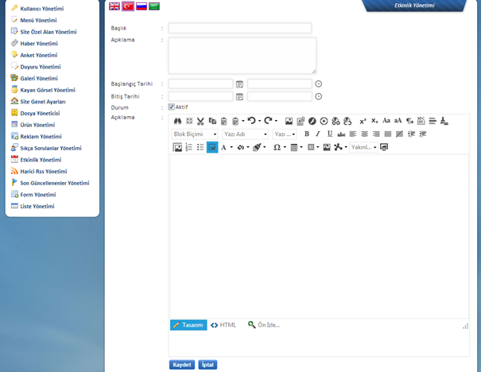

Girilecek etkinlik için bilgiler bu alandan oluþturulmaktadýr. Etkinlik adý Baþlýk alanýndan, kýsa tanýtým bilgisi Özet alanýndan girilecektir. Belirtilen tarihe göre aktif olacaðýndan, tercihinize göre ileri tarihli birden fazla etkinliði ayný çalýþmada ekleyebilirsiniz. Her etkinlik için bir baþlangýç ve bitiþ tarihi oluþturulmasý gerekmektedir. Etkinliði tercihinize göre belirlenen tarihte direkt aktif olacak þekilde ayarlayabilirsiniz. Etkinlikleri Aktif ve Pasif þekilde yönetmeniz mümkündür.
Genel ayarlar tamamlandýktan sonra içerik aþaðýda yer alan yardýmcý içerik editörü üzerinden girilecek ve sayfa “Kaydet” özelliði ile sunucu üzerinde aktif hale getirilecektir.
Yukarýdaki ekran henüz bir etkinlik oluþturulmamýþ durumda iseniz geçerlidir. Var olan etkinliklerin yönetimi üst alanda listeli þekilde belirecek ve Düzenle butonu ile deðiþiklik yapýlabilecektir. Yine ayný alanda tercihinize göre “Sil” komutu ile etkinliði arþivlemeden direkt silebilirsiniz.